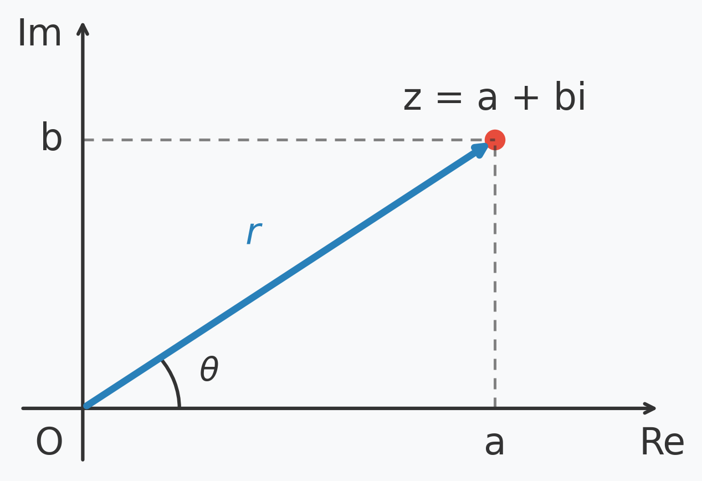
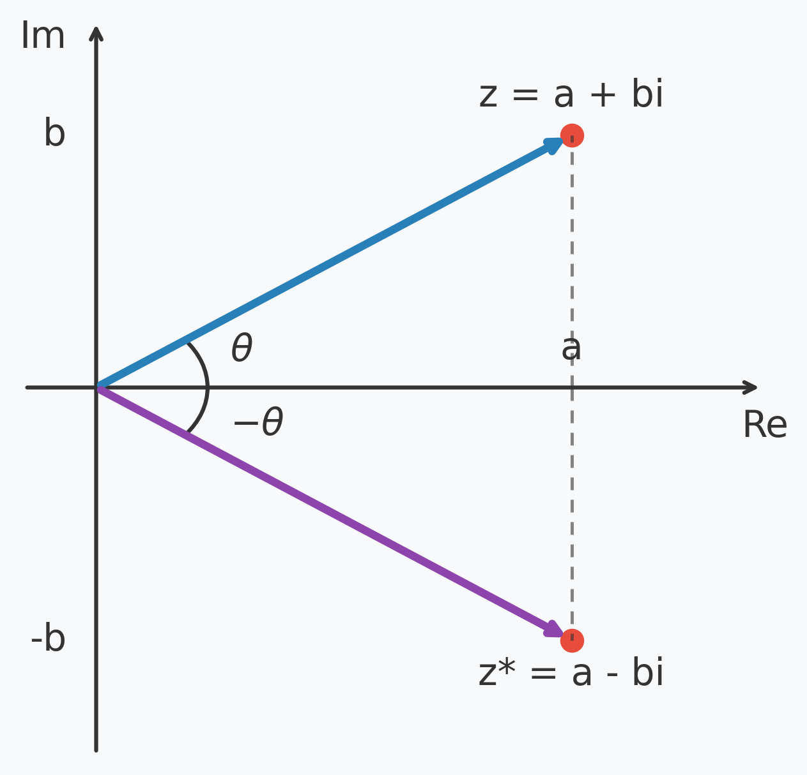
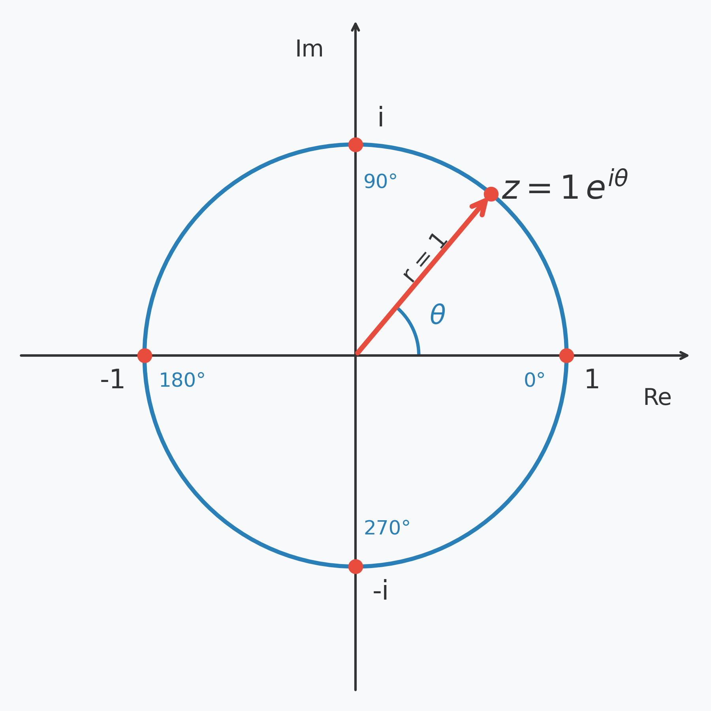
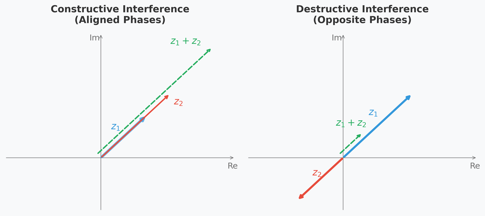

Capítulo 3 — Matemática para Computação Quântica¶
3.1 Por Que Este Capítulo Vem Antes dos Qubits¶
No Capítulo 1, comparamos um bit clássico a uma moeda em repouso sobre uma mesa, e um qubit a essa mesma moeda girando sobre a mesa. Essa é uma primeira imagem útil, mas é, em última análise, apenas uma imagem. Para ir além da intuição e realmente computar com qubits — para prever o que um circuito quântico faz, ou por que um determinado algoritmo funciona — precisamos de uma linguagem matemática precisa.
Essa linguagem é a álgebra linear, estendida com números complexos.
Isso pode soar intimidador, mas o objetivo deste capítulo é justamente o oposto de intimidar. Construiremos essa linguagem peça por peça, sempre partindo de uma pergunta simples e motivada, e só então introduzindo a ferramenta formal que a responde. Ao final do capítulo, você estará confortável com os quatro ingredientes listados no sumário do Capítulo 1: números complexos, espaços vetoriais e notação de Dirac. Tudo o mais neste livro — cada qubit, cada porta, cada algoritmo — é construído diretamente sobre essas ideias.
Note
Este capítulo é autocontido. Você não precisa de exposição prévia à álgebra linear ou aos números complexos. Se você já conhece esse material, sinta-se à vontade para folheá-lo e usá-lo como referência de notação.
3.2 Números Complexos¶
Por Que os Números Reais Não São Suficientes¶
A mecânica quântica descreve sistemas físicos usando amplitudes de probabilidade. Como vimos no Capítulo 1, essas amplitudes se comportam como ondas e podem interferir de forma construtiva ou destrutiva.
À primeira vista, pode parecer que números reais comuns deveriam ser suficientes para capturar isso. Afinal, números reais podem ser positivos ou negativos, e um sinal negativo já permite que duas quantidades se cancelem mutuamente ao serem somadas. Mas a interferência na mecânica quântica é mais rica do que uma simples inversão de sinal. Um número real só oferece duas “direções” — positiva ou negativa, equivalente a uma rotação de \(0°\) ou \(180°\). A interferência quântica, no entanto, exige amplitudes que possam se combinar em qualquer ângulo relativo, não apenas totalmente alinhadas ou totalmente opostas. Para descrever um contínuo de rotações possíveis, em vez de uma única inversão, precisamos de um número que carregue tanto uma magnitude quanto um ângulo ao mesmo tempo. É exatamente isso que um número complexo oferece, e é isso que torna os números complexos, e não os números reais, o alfabeto natural da mecânica quântica.
Neste ponto, é justo perguntar: de onde vem realmente essa exigência? A resposta honesta é que este é um postulado da mecânica quântica motivado experimentalmente — um de um pequeno conjunto de postulados que enunciaremos com precisão no Capítulo 4, uma vez que tivermos em mãos vetores e produtos internos. Por ora, basta aceitar os números complexos como o “alfabeto” natural no qual os estados quânticos são escritos, e nos tornarmos fluentes em usá-los.
Antes de falarmos sobre ângulos e rotações, porém, precisamos de um sistema numérico que realmente tenha espaço para eles — e os números reais, como estamos prestes a ver, ficam sem espaço quase imediatamente.
A Unidade Imaginária¶
Suponha que queiramos resolver a equação quadrática
Rearranjando a equação, obtemos
o que implica
Neste ponto, encontramos um problema. Nenhum número real satisfaz essa equação, porque o quadrado de todo número real — seja positivo ou negativo — é sempre não negativo. Em outras palavras, a raiz quadrada de um número negativo não existe dentro do sistema dos números reais.
Em vez de declarar a equação impossível, os matemáticos estenderam os números reais introduzindo um novo número chamado unidade imaginária, denotado por (i), e definiram que ele satisfaz
De forma equivalente, frequentemente escrevemos
Essa definição estende o sistema dos números reais no mesmo espírito em que os números negativos e os números irracionais um dia o estenderam. Não é um truque nem uma contradição; é o ponto de partida de um sistema numérico maior e notavelmente consistente.
Usando a unidade imaginária, podemos construir um número complexo, que é qualquer número da forma
onde (a) e (b) são números reais comuns. O valor (a) é chamado de parte real de (z), escrito \(\operatorname{Re}(z)\), enquanto (b) é chamado de parte imaginária, escrito \(\operatorname{Im}(z)\).
z = a + bi
│ │
│ └── Parte imaginária (b)
└─────── Parte real (a)
Observe que todo número real também é um número complexo com (b = 0). Em outras palavras, os números complexos não substituem os números reais — eles os estendem, assim como os números reais estendem os números racionais.
O Plano Complexo¶
Como um número complexo possui duas componentes independentes — a parte real e a parte imaginária — ele não pode ser representado em uma reta numérica. Em vez disso, cada número complexo corresponde a um ponto no plano complexo, onde o eixo horizontal representa a parte real e o eixo vertical representa a parte imaginária.
{kind=link}

Representação geométrica de um número complexo no plano complexo. O mesmo ponto pode ser descrito pelas coordenadas cartesianas \((a,b)\) (forma retangular) ou, de maneira equivalente, pelo módulo \(r\) e pela fase \(\theta\) (forma polar).¶
Essa representação geométrica será uma ferramenta fundamental ao longo do livro. Nas próximas seções veremos como calcular o módulo \(r\) e a fase \(\theta\), permitindo escrever um mesmo número complexo em duas formas equivalentes:
Forma retangular: \(z = a + bi\).
Forma polar: \(z = re^{i\theta}\).
Módulo e Conjugado Complexo¶
Uma vez representado no plano complexo, um número complexo possui duas propriedades geométricas particularmente importantes: seu módulo e seu conjugado.
O módulo (ou magnitude) de um número complexo \(z = a + bi\) é sua distância até a origem. Pelo teorema de Pitágoras,
O conjugado complexo de \(z\), escrito \(z^{*}\) (ou, em alguns textos, \(\bar{z}\)), é obtido trocando o sinal da parte imaginária,
Geometricamente, isso corresponde a refletir o ponto em relação ao eixo real.
{kind=link}

O conjugado complexo corresponde ao reflexo de \(z\) em relação ao eixo real. O módulo permanece inalterado.¶
O conjugado não é apenas uma construção algébrica. Ele desempenha um papel central na mecânica quântica, pois multiplicar um número complexo pelo seu conjugado sempre produz um número real não negativo
Important
A identidade \(z z^{*} = |z|^2\) estabelece a ponte entre as amplitudes de probabilidade complexas e as probabilidades reais e não negativas observadas nas medições quânticas. Ela aparecerá repetidamente a partir do Capítulo 4.
Forma Polar e a Fórmula de Euler¶
Até agora descrevemos um número complexo usando suas coordenadas no plano complexo,
Essa é a forma retangular. Entretanto, como vimos na Seção 2.3, o mesmo ponto também pode ser descrito por duas quantidades geométricas: sua distância até a origem (o módulo \(r\)) e o ângulo que forma com o eixo real positivo (a fase \(\theta\)).
Usando trigonometria elementar, as coordenadas cartesianas podem ser escritas como
Substituindo essas relações em \(z=a+bi\), obtemos
Esse resultado pode ser simplificado usando um dos resultados mais elegantes da matemática: a fórmula de Euler,
o que nos leva à forma polar de um número complexo,
Assim, um mesmo número complexo pode ser escrito de duas maneiras equivalentes:
Forma retangular: \(z=a+bi\).
Forma polar: \(z=re^{i\theta}\).
{kind=link}

No círculo unitário (\(r=1\)), a expressão \(e^{i\theta}\) representa um ponto que gira à medida que \(\theta\) varia. Alguns valores importantes são \(e^{i0}=1\), \(e^{i\pi/2}=i\), \(e^{i\pi}=-1\) e \(e^{i3\pi/2}=-i\).¶
Exemplo — Convertendo para a forma polar
Vamos converter
para a forma polar.
Pela definição de módulo,
A fase é
de modo que
Podemos verificar facilmente o resultado voltando à forma retangular:
Recuperamos, portanto, o número complexo original.
Embora a forma polar pareça apenas outra maneira de escrever o mesmo número, ela será a representação dominante na computação quântica. O módulo \(r\) determina a magnitude da amplitude, enquanto a fase \(\theta\) controla como diferentes amplitudes interferem entre si.
É justamente essa dependência da fase que torna possível a interferência quântica. Quando duas amplitudes possuem fases semelhantes, elas tendem a se reforçar; quando possuem fases opostas, tendem a se cancelar.
{kind=link}

Duas amplitudes complexas podem interferir de forma construtiva (esquerda) ou destrutiva (direita), dependendo da diferença entre suas fases.¶
Exercícios¶
Verdadeiro ou falso: todo número real também é um número complexo. Justifique sua resposta usando a definição \(z=a+bi\).
Resolução
Sim. Basta fazer \(b=0\) na definição
Todo número real pode ser escrito como
portanto o conjunto dos números reais é um subconjunto dos números complexos.
Geometricamente, o que significa multiplicar um número complexo pelo seu conjugado, e por que o resultado sempre cai no eixo real?
Resolução
Multiplicar um número complexo pelo seu conjugado produz
Geometricamente, o resultado é o quadrado da distância até a origem. Como \(a^2+b^2\) é sempre um número real não negativo, o produto pertence ao eixo real.
Dois números complexos têm o mesmo módulo, mas fases que diferem em \(180°\). O que você pode dizer sobre a soma deles?
Resolução
Uma diferença de fase de \(180^\circ\) significa que os vetores apontam em direções opostas. Se possuem o mesmo módulo, eles se cancelam exatamente, de modo que
Esse é o caso extremo de interferência destrutiva.
Encontre o módulo e o conjugado complexo de \(z = 5 - 12i\).
Resolução
O conjugado é
O módulo é
Converta \(z = 1 + i\) para a forma polar. Quais são \(r\) e \(\theta\)?
Resolução
O módulo é
Como o vetor está no primeiro quadrante,
Logo,
Converta \(z = 4\,e^{i\cdot 120°}\) de volta para a forma retangular \(a + bi\).
Resolução
Usando
temos
Como
segue que
Calcule \(z \cdot z^{*}\) para \(z = 2 - 3i\) e confirme que é igual a \(|z|^2\).
Resolução
O conjugado é
Logo,
Além disso,
portanto
confirmando a identidade.
Duas amplitudes de probabilidade são dadas por \(z_1 = 2\,e^{i\cdot 0°}\) e \(z_2 = 2\,e^{i\cdot 30°}\). A soma delas está mais próxima da interferência construtiva ou destrutiva? Esboce os dois vetores antes de calcular.
Resolução
As fases diferem em apenas \(30^\circ\), portanto os vetores apontam quase na mesma direção. A soma possui módulo maior que o de cada vetor individual, caracterizando uma interferência predominantemente construtiva.
Agora suponha que \(z_2 = 2\,e^{i\cdot 170°}\) em vez disso. Como a imagem muda, e o que acontece com \(|z_1 + z_2|\) em comparação com a questão 8?
Resolução
Agora os vetores apontam quase em direções opostas. A soma tem módulo muito menor do que na questão anterior, caracterizando uma interferência predominantemente destrutiva.
Com base nas questões 8–9, proponha uma regra geral (em palavras, sem necessidade de fórmula) para quando duas amplitudes de mesmo módulo interferem majoritariamente de forma construtiva versus majoritariamente destrutiva.
Resolução
Quanto menor a diferença de fase entre duas amplitudes, mais construtiva tende a ser a interferência. Quanto mais próxima de \(180^\circ\) for essa diferença, mais destrutiva ela será. A fase relativa é o fator que determina como as amplitudes se combinam.
3.3 Vetores e Espaços Vetoriais¶
Introduzindo Vetores¶
Um único número complexo já é um objeto útil, mas estados quânticos envolvem mais de uma amplitude ao mesmo tempo. Para descrever um sistema com vários resultados possíveis, agrupamos múltiplos números em um único objeto chamado vetor.
Um vetor é simplesmente uma lista ordenada de números, escrita como uma coluna:
Na computação quântica, as entradas \(v_1, v_2, \dots, v_n\) serão quase sempre números complexos.
Espaços Vetoriais¶
Um espaço vetorial é uma coleção de vetores que podem ser combinados de duas formas básicas: somando dois vetores entre si, ou multiplicando um vetor por um número (chamado de escalar).
Adição de vetores. Dois vetores do mesmo tamanho são somados entrada por entrada:
Por exemplo,
Multiplicação por escalar. Um vetor é multiplicado por um número \(c\) multiplicando cada uma de suas entradas por \(c\):
Por exemplo,
Geometricamente, isso corresponde a esticar, encolher ou girar o vetor (dependendo se \(c\) é maior que 1, menor que 1, ou complexo), sem alterar sua “direção base”. Multiplicar por \(3\), no primeiro exemplo, estica o vetor mantendo sua direção; multiplicar por \(i\), no segundo, é uma operação puramente quântica — não corresponde a esticar nem inverter o vetor em um sentido “clássico”, mas sim a uma rotação de fase, algo que retomaremos quando falarmos de fases em qubits no Capítulo 4.
Essas duas operações não podem ser combinadas de qualquer jeito — elas precisam obedecer a um pequeno conjunto de regras consistentes, que garantem que a álgebra se comporte da forma que esperamos. A mais importante delas, para os nossos propósitos, é a distributividade: multiplicar uma soma de vetores por um escalar é o mesmo que multiplicar cada vetor separadamente e depois somar,
e, na direção oposta, somar dois escalares e multiplicar pelo vetor é o mesmo que multiplicar separadamente e depois somar,
Podemos conferir a primeira regra com os vetores do exemplo acima, usando \(c=3\), \(v = \begin{pmatrix} 2 \\ 3 \end{pmatrix}\) e \(w = \begin{pmatrix} 1 \\ -1 \end{pmatrix}\). Calculando os dois lados separadamente:
Os dois lados coincidem, como esperado.
Essa propriedade é o que torna possível o conceito de combinação linear, que veremos a seguir — e é diretamente responsável, mais adiante no livro, pelo fato de que aplicar uma porta quântica a uma superposição equivale a aplicá-la a cada termo da superposição separadamente.
Note
Formalmente, um espaço vetorial é definido por oito axiomas (associatividade e comutatividade da soma, existência de um vetor nulo, existência de um inverso aditivo, compatibilidade da multiplicação escalar, elemento neutro escalar, e as duas leis distributivas acima). Não precisamos memorizá-los para usar espaços vetoriais em computação quântica — o que importa na prática é que soma e multiplicação por escalar se comportam exatamente como a intuição algébrica sugere. Para um tratamento axiomático completo pode consultar Axler (2015) [3].
Os espaços vetoriais relevantes para a computação quântica são construídos usando números complexos como escalares. Eles são chamados de espaços vetoriais complexos, e são o lar natural dos estados quânticos.
Combinações Lineares, Base e Dimensão¶
Uma combinação linear de vetores é simplesmente uma soma ponderada deles, usando escalares como pesos:
Por exemplo, tomando os vetores \(v_1 = \begin{pmatrix} 1 \\ 0 \end{pmatrix}\) e \(v_2 = \begin{pmatrix} 0 \\ 1 \end{pmatrix}\), a combinação linear com pesos \(c_1 = 3\) e \(c_2 = 4\) produz
Em outras palavras, qualquer vetor de 2 entradas pode ser construído combinando \(v_1\) e \(v_2\) com os pesos certos — é exatamente isso que os torna especiais.
Um conjunto de vetores com essa propriedade — capaz de gerar todo vetor do espaço através de combinações lineares, sem que nenhum deles seja redundante (ou seja, nenhum pode ser escrito como combinação dos outros) — é chamado de base do espaço vetorial. O número de vetores necessários para formar uma base é chamado de dimensão do espaço vetorial. No exemplo acima, \(\{v_1, v_2\}\) é uma base do espaço de vetores com 2 entradas, que portanto tem dimensão 2.
Para um único qubit, o espaço vetorial relevante é exatamente esse: tem dimensão 2, e sua base mais natural é formada pelos dois vetores acima, \(\begin{pmatrix} 1 \\ 0 \end{pmatrix}\) e \(\begin{pmatrix} 0 \\ 1 \end{pmatrix}\), que representam “definitivamente 0” e “definitivamente 1” — nós os encontraremos formalmente como \(|0\rangle\) e \(|1\rangle\) na Seção 4.
Note
É exatamente por isso que as duas possibilidades do bit clássico (0 e 1) reaparecem dentro da matemática do qubit: elas correspondem aos dois vetores de base de um espaço vetorial complexo de 2 dimensões. O que muda é que um qubit também pode ser qualquer combinação linear desses dois vetores, com pesos complexos — este é exatamente o significado matemático da superposição.
Produto Interno e Norma¶
Para medir o “comprimento” de um vetor, ou a “sobreposição” entre dois vetores, precisamos de mais uma ferramenta: o produto interno, escrito \(\langle v, w \rangle\).
Note
Esta notação de colchetes angulares é o padrão usual em álgebra linear para o produto interno, e ainda não é a notação de Dirac — essa vem na Seção 4, onde reescreveremos exatamente esta mesma operação como \(\langle \phi | \psi \rangle\).
Para dois vetores \(v\) e \(w\) com entradas complexas, o produto interno é definido como:
Por exemplo, para \(v = \begin{pmatrix} 1+i \\ 2 \end{pmatrix}\) e \(w = \begin{pmatrix} 3 \\ i \end{pmatrix}\),
Observe o conjugado complexo nas entradas de \(v\). Essa não é uma escolha arbitrária — é exatamente o que garante que o produto interno de um vetor consigo mesmo seja sempre um número real não negativo:
Essa quantidade é usada para definir a norma (comprimento) de um vetor:
Important
Um vetor de estado quântico deve sempre ter norma igual a 1. Isso é chamado de condição de normalização, e é o que garante que as probabilidades extraídas de um estado quântico (via \(|v_i|^2\)) somem exatamente 100%. Voltaremos a isso assim que introduzirmos formalmente os qubits no Capítulo 4.
Dois vetores são chamados de ortogonais se o produto interno entre eles é zero — intuitivamente, eles apontam em direções “completamente independentes”, sem nenhuma sobreposição. Uma base cujos vetores são todos mutuamente ortogonais e individualmente normalizados (norma 1) é chamada de base ortonormal. A computação quântica se apoia quase exclusivamente em bases ortonormais, porque elas correspondem a conjuntos de resultados de medição perfeitamente distinguíveis.
Exercícios¶
Calcule a soma dos vetores \(v = \begin{pmatrix} 4 \\ -2 \end{pmatrix}\) e \(w = \begin{pmatrix} -1 \\ 5 \end{pmatrix}\).
Resolução
Calcule \(2i\begin{pmatrix} 1 \\ -1 \end{pmatrix}\) e descreva, em palavras, que tipo de transformação a multiplicação por \(2i\) representa (comparada à multiplicação por um escalar real).
Resolução
Diferente de um escalar real, que apenas estica, encolhe ou inverte o vetor, o fator \(2i\) combina um alongamento (fator \(2\)) com uma rotação de fase — algo sem análogo entre os escalares reais, e que retomaremos ao discutir a fase de um qubit.
Verifique a lei distributiva \(c(v+w) = cv+cw\) usando \(c=2\), \(v = \begin{pmatrix} 1 \\ 3 \end{pmatrix}\) e \(w=\begin{pmatrix} 2 \\ -1 \end{pmatrix}\).
Resolução
Lado esquerdo:
Lado direito:
Os dois lados coincidem, confirmando a lei distributiva.
Os vetores \(v_1 = \begin{pmatrix} 1 \\ 1 \end{pmatrix}\) e \(v_2 = \begin{pmatrix} 1 \\ -1 \end{pmatrix}\) formam uma base do espaço de vetores com 2 entradas? Se sim, escreva \(\begin{pmatrix} 3 \\ 1 \end{pmatrix}\) como combinação linear de \(v_1\) e \(v_2\).
Resolução
Sim: \(v_1\) e \(v_2\) não são múltiplos um do outro, então são independentes, e duas vetores independentes já são suficientes para formar uma base de um espaço de dimensão 2.
Buscamos \(c_1, c_2\) tais que \(c_1 v_1 + c_2 v_2 = \begin{pmatrix} 3 \\ 1 \end{pmatrix}\), ou seja,
Somando as duas equações, \(2c_1 = 4 \Rightarrow c_1 = 2\), e portanto \(c_2 = 1\). Conferindo:
Os vetores \(u_1 = \begin{pmatrix} 2 \\ 4 \end{pmatrix}\) e \(u_2 = \begin{pmatrix} 1 \\ 2 \end{pmatrix}\) formam uma base do espaço de vetores com 2 entradas? Justifique.
Resolução
Não. Observe que \(u_1 = 2u_2\), ou seja, um vetor é múltiplo escalar do outro. Eles apontam na mesma direção e só conseguem gerar, por combinação linear, os vetores ao longo dessa única reta — não todo o plano. Portanto \(\{u_1, u_2\}\) não é uma base do espaço de dimensão 2.
Calcule o produto interno \(\langle v, w\rangle\) para \(v = \begin{pmatrix} 2 \\ -i \end{pmatrix}\) e \(w = \begin{pmatrix} i \\ 3 \end{pmatrix}\).
Resolução
Calcule a norma do vetor \(v = \begin{pmatrix} 1 \\ 1 \\ 1 \\ 1 \end{pmatrix}\). O vetor está normalizado? Caso não esteja, encontre um múltiplo escalar dele que esteja.
Resolução
Como a norma não é 1, o vetor não está normalizado. Multiplicando por \(\tfrac12\):
que tem norma \(\sqrt{4\cdot(1/2)^2} = \sqrt{1} = 1\).
Verifique se os vetores \(v=\begin{pmatrix}1\\0\end{pmatrix}\) e \(w = \begin{pmatrix} 0 \\ i\end{pmatrix}\) são ortogonais.
Resolução
Como o produto interno é zero, os vetores são ortogonais.
Um estado de qubit é escrito como \(|\psi\rangle = \begin{pmatrix} \tfrac{1}{\sqrt3} \\ c \end{pmatrix}\) para algum número real \(c>0\). Use a condição de normalização para encontrar \(c\).
Resolução
A condição de normalização exige
Como \(c>0\),
Verdadeiro ou falso: se dois vetores são ortogonais, então a norma da soma deles é igual à soma das normas individuais. Justifique (dica: calcule \(\|v+w\|^2\) usando o produto interno).
Resolução
Falso. Expandindo,
Para vetores ortogonais, \(\langle v,w\rangle = \langle w,v\rangle = 0\), então
Ou seja, são os quadrados das normas que se somam (como no teorema de Pitágoras), não as normas em si. Por exemplo, se \(\|v\|=3\) e \(\|w\|=4\), então \(\|v+w\| = 5\), e não \(3+4=7\).
3.4 Notação de Dirac¶
Por Que Sequer uma Nova Notação?¶
Neste ponto já temos tudo que precisamos matematicamente: números complexos, vetores e produtos internos. Então por que a mecânica quântica usa ainda outra notação em cima disso?
A resposta é conveniência e clareza. A notação de Dirac (também chamada de notação bra-ket), introduzida por Paul Dirac na década de 1930, foi projetada especificamente para tornar as expressões da mecânica quântica compactas, inequívocas e fáceis de manipular. Depois que você se acostuma com ela, fica difícil imaginar a computação quântica escrita de qualquer outra forma — e todo artigo, livro didático e framework de programação quântica que você encontrará usa essa notação.
Kets¶
Um ket, escrito \(|\psi\rangle\), é simplesmente um vetor coluna:
O símbolo dentro do “meio-colchete” (aqui, \(\psi\)) é apenas um rótulo escolhido por quem está descrevendo o estado — pode ser uma letra, uma palavra ou até mesmo um dígito. Para um único qubit, os dois estados de base são convencionalmente rotulados \(|0\rangle\) e \(|1\rangle\):
Esse par é chamado de base computacional, e é a base padrão usada em toda a computação quântica.
Bras¶
Um bra, escrito \(\langle\psi|\), é a transposta conjugada do ket correspondente — ou seja, transformamos a coluna em uma linha, e tomamos o conjugado complexo de cada entrada:
Por exemplo, o bra correspondente a \(|\psi\rangle = \begin{pmatrix} 2+i \\ 3i \end{pmatrix}\) é
Ket |ψ⟩ → vetor coluna
Bra ⟨ψ| → vetor linha, entradas conjugadas
Todo ket tem um bra correspondente, e vice-versa. Juntos, eles dão nome à notação: bra + ket = bra-ket.
Juntando os Dois: O Produto Interno¶
A verdadeira elegância da notação de Dirac aparece quando um bra e um ket são colocados lado a lado. A expressão \(\langle\phi|\psi\rangle\) é exatamente o produto interno que definimos na Seção 3.4:
⟨ϕ| × |ψ⟩ = ⟨ϕ|ψ⟩
(bra) (ket) (um único número)
É exatamente por isso que a notação foi projetada dessa forma: o “colchete” \(\langle \cdot | \cdot \rangle\) literalmente descreve a operação que está sendo realizada. Usando a base computacional como exemplo:
Por exemplo, calculando \(\langle 0|1\rangle\) diretamente pela fórmula:
Esses três resultados simplesmente confirmam, na nova notação, que \(|0\rangle\) e \(|1\rangle\) são cada um normalizados (norma 1) e mutuamente ortogonais — em outras palavras, que eles formam uma base ortonormal.
Estados Quânticos Gerais em Notação de Dirac¶
Usando a ideia de combinação linear da Seção 3.3, um estado geral de um único qubit agora pode ser escrito como:
onde \(\alpha\) e \(\beta\) são números complexos chamados de amplitudes de probabilidade, sujeitos à condição de normalização:
Por exemplo, \(\alpha = \beta = \tfrac{1}{\sqrt{2}}\) satisfaz a normalização, pois
descrevendo um qubit igualmente “dividido” entre \(|0\rangle\) e \(|1\rangle\) — o estado de superposição mais simples possível, que revisitaremos no Capítulo 4.
Essa única equação é a versão matemática precisa da analogia da “moeda girando” do Capítulo 1: o qubit não é simplesmente \(|0\rangle\) ou \(|1\rangle\), mas uma combinação de ambos, ponderada por amplitudes complexas cujas magnitudes ao quadrado se comportam como probabilidades.
Note
Estamos apenas fazendo uma prévia aqui. O Capítulo 4 definirá o qubit formalmente, explicará exatamente por que \(|\alpha|^2\) e \(|\beta|^2\) são interpretados como probabilidades (a regra de Born), e conectará essa equação à Esfera de Bloch introduzida no Capítulo 1.
Exercícios¶
Escreva o ket correspondente ao vetor \(\begin{pmatrix} 3 \\ -2i \end{pmatrix}\), e em seguida escreva o bra correspondente.
Resolução
O ket é simplesmente
O bra é a transposta conjugada:
Calcule \(\langle\phi|\psi\rangle\) para \(|\phi\rangle = \begin{pmatrix} i \\ 1\end{pmatrix}\) e \(|\psi\rangle = \begin{pmatrix} 2 \\ -i \end{pmatrix}\).
Resolução
Calcule \(\langle 1|0\rangle\) e \(\langle 1|1\rangle\) diretamente pela definição, confirmando os resultados apresentados na Seção 4.4.
Resolução
Com \(\langle 1| = \begin{pmatrix} 0 & 1 \end{pmatrix}\):
Ambos os resultados confirmam que \(|0\rangle\) e \(|1\rangle\) são ortogonais entre si e que \(|1\rangle\) está normalizado.
O vetor \(|\psi\rangle = \begin{pmatrix} 0{,}6 \\ 0{,}8 \end{pmatrix}\) representa um estado de qubit válido? Justifique usando a condição de normalização.
Resolução
Sim, é um estado válido, pois satisfaz a condição de normalização.
Encontre todos os valores reais possíveis de \(\beta > 0\) tais que \(|\psi\rangle = \tfrac{1}{2}|0\rangle + \beta|1\rangle\) seja um estado normalizado.
Resolução
Como \(\beta>0\),
Escreva o estado \(|\psi\rangle = \begin{pmatrix} 1/\sqrt2 \\ -1/\sqrt2 \end{pmatrix}\) na forma \(\alpha|0\rangle+\beta|1\rangle\), identificando \(\alpha\) e \(\beta\).
Resolução
Comparando entrada a entrada com \(\alpha|0\rangle+\beta|1\rangle = \begin{pmatrix}\alpha\\\beta\end{pmatrix}\), identificamos
Este será, na Seção 5, o vetor \(|-\rangle\).
Verdadeiro ou falso: para qualquer ket \(|\psi\rangle\), o número \(\langle\psi|\psi\rangle\) é sempre real e não negativo. Justifique usando a definição de bra.
Resolução
Verdadeiro. Por definição,
e cada termo \(|\psi_i|^2\) é real e não negativo. Essa quantidade é exatamente o quadrado da norma de \(|\psi\rangle\), consistente com a Seção 3.4.
Considere os kets \(|a\rangle = \begin{pmatrix}1\\i\end{pmatrix}\) e \(|b\rangle = \begin{pmatrix}1\\-i\end{pmatrix}\) (não normalizados). Eles são ortogonais? Calcule \(\langle a|b\rangle\) para responder.
Resolução
Sim, são ortogonais.
3.5 Matrizes e Operadores Lineares¶
Matrizes como Transformações¶
Se um vetor descreve o estado de um sistema quântico, então algo mais deve descrever como esse estado muda. Esse algo é uma matriz.
Uma matriz é um arranjo retangular de números e — crucialmente — pode ser multiplicada por um vetor para produzir um novo vetor:
Para uma matriz \(2\times2\) genérica agindo sobre um vetor de 2 entradas, a regra de multiplicação é
isto é: cada entrada do vetor resultante é a soma dos produtos entre uma linha da matriz e o vetor original.
Exemplo — Multiplicação matriz-vetor
Tome a matriz
e o vetor \(v = \begin{pmatrix} 5 \\ 6 \end{pmatrix}\). Aplicando a regra acima:
Nada aqui é específico de computação quântica — é apenas álgebra linear comum.
Na computação quântica, as matrizes desempenham o papel de portas quânticas: toda operação aplicada a um qubit, conforme introduzido conceitualmente no Capítulo 1, corresponde matematicamente a multiplicar seu vetor de estado por uma matriz.
Estado Porta Novo Estado
|ψ⟩ × M = |ψ'⟩
(antes) (transformação) (depois)
Um exemplo particularmente importante é a matriz
conhecida como porta X (ou porta NOT quântica), que reencontraremos ao longo desta seção. Aplicando-a a \(|0\rangle\):
Ou seja, \(X\) troca \(|0\rangle\) por \(|1\rangle\) — exatamente como uma porta NOT clássica trocaria um bit 0 por um bit 1. Voltaremos a essa porta, e a várias outras, formalmente no Capítulo 4.
A Matriz Identidade¶
A matriz mais simples possível é a matriz identidade, denotada \(I\), que deixa todo vetor inalterado:
Embora trivial por si só, a matriz identidade é um ponto de referência útil: toda porta quântica pode ser entendida, em parte, comparando o que ela faz de diferente em relação a não fazer nada.
O Adjunto (Transposta Conjugada) de uma Matriz¶
Assim como um ket tem um bra correspondente, toda matriz \(M\) tem um adjunto correspondente, escrito \(M^{\dagger}\) (lido “M dagger”), obtido transpondo a matriz e tomando o conjugado complexo de cada entrada:
Por exemplo, para \(M = \begin{pmatrix} i & 2 \\ 0 & 1-i \end{pmatrix}\), primeiro transpomos,
e depois conjugamos cada entrada, obtendo
Para a porta \(X\) da Seção 5.1, como todas as entradas já são reais, transpor não muda nada e a conjugação também não tem efeito, de modo que \(X^{\dagger} = X\).
O adjunto reaparecerá constantemente ao longo deste livro, mais importante na próxima definição.
Matrizes Unitárias¶
Nem toda matriz corresponde a algo fisicamente permitido dentro de um computador quântico. Lembre-se, da Seção 3.4, que um vetor de estado quântico deve sempre ter norma 1 — isso representa a exigência de que as probabilidades somem 100%. Segue-se que qualquer transformação aplicada a um estado quântico deve preservar essa norma; caso contrário, as “probabilidades” resultantes deixariam de fazer sentido.
Matrizes com essa propriedade de preservar a norma são chamadas de matrizes unitárias, e satisfazem a condição definidora:
Podemos confirmar que a porta \(X\) é unitária. Como vimos na Seção 5.3, \(X^{\dagger} = X\), então basta calcular \(X^{\dagger}X = X^2\):
A condição é satisfeita, confirmando que \(X\) é, de fato, uma porta quântica legítima.
Important
Toda porta quântica é representada matematicamente por uma matriz unitária. Isso não é uma escolha de design arbitrária — é uma consequência matemática direta da exigência de que os estados quânticos permaneçam devidamente normalizados após cada operação. Usaremos esse fato repetidamente assim que as portas quânticas forem introduzidas formalmente.
Uma forma intuitiva de pensar sobre matrizes unitárias é que elas rotacionam vetores sem esticá-los ou encolhê-los — de forma bem parecida com rotacionar uma seta ao redor da origem, o que muda sua direção mas nunca seu comprimento.
Produto Tensorial¶
Tudo o que foi discutido até agora — vetores, produto interno, matrizes unitárias — descreve um único qubit. Mas uma computação interessante exige muitos qubits trabalhando juntos, e precisamos de uma ferramenta matemática para combinar múltiplos sistemas quânticos em um único sistema maior. Essa ferramenta é o produto tensorial, escrito \(\otimes\).
Definição. Dados dois vetores \(v\) (com \(n\) entradas) e \(w\) (com \(m\) entradas), o produto tensorial \(v \otimes w\) é um novo vetor com \(n \times m\) entradas, formado tomando cada entrada de \(v\) e multiplicando-a por todo o vetor \(w\):
onde cada “bloco” \(v_i w\) é o vetor \(w\) inteiro, multiplicado pelo escalar \(v_i\) — ao todo, \(n\) blocos de tamanho \(m\), totalizando \(n\times m\) entradas.
Exemplo — Produto tensorial de dois vetores de 2 entradas
Tome \(v = \begin{pmatrix} 1 \\ 2 \end{pmatrix}\) e \(w = \begin{pmatrix} 3 \\ 4 \end{pmatrix}\). Então
Note que o resultado tem \(2\times2=4\) entradas, como esperado.
Propriedades. O produto tensorial se comporta de forma previsível em relação à soma e à multiplicação por escalar — ele é bilinear, o que significa que é distributivo em cada um de seus dois argumentos separadamente:
Essas propriedades garantem que combinações lineares “atravessam” o produto tensorial de forma natural — algo que usaremos repetidamente ao combinar qubits em superposição.
Combinando qubits. A aplicação central do produto tensorial, para nós, é combinar os estados de qubits individuais em um único estado descrevendo vários qubits ao mesmo tempo. Para dois qubits, tomamos o produto tensorial de dois vetores de base computacional. Por exemplo:
Como esse tipo de expressão aparecerá o tempo todo, adotamos uma notação abreviada, escrevendo simplesmente os rótulos lado a lado dentro de um único ket:
Repetindo o processo para as quatro combinações possíveis de dois qubits, obtemos os quatro vetores da base computacional de dois qubits:
Note
A ordem dos rótulos importa: \(|01\rangle\) representa “primeiro qubit em \(|0\rangle\), segundo qubit em \(|1\rangle\)”, e é um vetor diferente de \(|10\rangle\). Essa convenção de ordenação será usada de forma consistente em todo o livro.
Dimensão. Se \(V\) tem dimensão \(n\) e \(W\) tem dimensão \(m\), então o espaço \(V\otimes W\) tem dimensão \(n\times m\). Como o espaço de um único qubit tem dimensão 2, o espaço de dois qubits tem dimensão \(2\times2=4\) — exatamente as quatro entradas dos vetores acima.
Três qubits, e além. O mesmo processo se estende a qualquer número de qubits, tomando o produto tensorial de mais vetores. Por exemplo, o estado de três qubits \(|0\rangle\), \(|1\rangle\) e \(|1\rangle\), nessa ordem, é
um vetor com \(2\times2\times2=8\) entradas (com um único \(1\) na posição correspondente a “011” em binário, e todas as demais entradas iguais a zero).
De forma geral, o espaço de \(n\) qubits tem dimensão \(2^n\). Essa é a razão matemática por trás de um dos fatos mais importantes — e mais surpreendentes — da computação quântica: o número de amplitudes necessárias para descrever \(n\) qubits cresce exponencialmente com \(n\), não linearmente:
Qubits (\(n\)) |
Dimensão (\(2^n\)) |
|---|---|
1 |
2 |
2 |
4 |
3 |
8 |
4 |
16 |
5 |
32 |
10 |
1.024 |
50 |
\(\approx 1{,}1\times10^{15}\) |
Important
Esse crescimento exponencial é a razão fundamental pela qual sistemas quânticos com muitos qubits são tão difíceis de simular usando computadores clássicos — e, ao mesmo tempo, a razão pela qual eles são, em princípio, capazes de realizar certos cálculos que nenhum computador clássico conseguiria realizar em tempo viável. Voltaremos a essa ideia repetidamente ao longo do livro.
Estados compostos gerais. Assim como um único qubit pode ser qualquer combinação linear normalizada de \(|0\rangle\) e \(|1\rangle\) (Seção 4.5), um estado de \(n\) qubits pode ser qualquer combinação linear normalizada dos \(2^n\) vetores da base computacional. Para dois qubits, por exemplo, o estado mais geral possível é
Note
Nem todo estado de dois (ou mais) qubits pode ser reescrito como o produto tensorial de estados individuais de cada qubit separadamente — alguns estados combinados simplesmente não se “desmontam” dessa forma. Esse fato, e suas consequências físicas, é um dos tópicos centrais da Parte IV deste livro, quando sistemas multi-qubit forem estudados em profundidade.
Produto Externo¶
Na Seção 4.4, vimos que colocar um bra à esquerda de um ket, \(\langle\phi|\psi\rangle\), produz um único número — o produto interno. Existe também a operação oposta: colocar um ket à esquerda de um bra, produzindo não um número, mas uma matriz. Essa operação é chamada de produto externo, escrito \(|\psi\rangle\langle\phi|\).
|ψ⟩ × ⟨ϕ| = |ψ⟩⟨ϕ|
(ket) (bra) (uma matriz)
Concretamente, multiplicamos a coluna \(|\psi\rangle\) pela linha \(\langle\phi|\) seguindo a regra usual de multiplicação de matrizes. Por exemplo, tomando \(|0\rangle\) e \(\langle 0|\):
Essa matriz específica, \(|0\rangle\langle 0|\), é chamada de projetor sobre \(|0\rangle\): aplicá-la a qualquer estado “seleciona” a parte desse estado ao longo de \(|0\rangle\), descartando o restante. Por exemplo, aplicando-a ao estado de superposição \(|\psi\rangle = \alpha|0\rangle + \beta|1\rangle\) da Seção 4.5:
onde usamos \(\langle 0|0\rangle = 1\) e \(\langle 0|1\rangle = 0\), calculados na Seção 4.4.
Note
Projetores como \(|0\rangle\langle 0|\) e \(|1\rangle\langle 1|\) vão reaparecer no Capítulo 4 como a ferramenta matemática exata usada para descrever a medição de um qubit — o processo que extrai um resultado clássico (0 ou 1) a partir de uma superposição.
Mudança de Base¶
A base computacional \(\{|0\rangle, |1\rangle\}\) não é a única base ortonormal do espaço de um qubit (Seção 3.4). Uma outra base, extremamente comum em computação quântica, é formada pelos vetores
Escritos como vetores coluna, isso é
É fácil verificar (Exercício 12 abaixo) que \(|+\rangle\) e \(|-\rangle\) são normalizados e mutuamente ortogonais, exatamente como \(|0\rangle\) e \(|1\rangle\) — ou seja, \(\{|+\rangle, |-\rangle\}\) é também uma base ortonormal do mesmo espaço.
Note
A ideia central aqui é simples, mas importante: um único estado quântico pode ser descrito em mais de uma base. Escrever um qubit em termos de \(|0\rangle\) e \(|1\rangle\) ou em termos de \(|+\rangle\) e \(|-\rangle\) não muda o estado físico — muda apenas a “linguagem” usada para descrevê-lo, da mesma forma que um ponto no plano pode ser descrito por coordenadas cartesianas diferentes, dependendo de como os eixos são escolhidos. Retomaremos essa ideia no Capítulo 4, quando ela se tornará central para entender a medição de um qubit em bases diferentes da computacional.
Autovalores e Autovetores¶
Mais um conceito será útil em capítulos posteriores, particularmente quando discutirmos medição: autovetores e autovalores.
Para uma dada matriz \(M\), um vetor \(|v\rangle\) é chamado de autovetor de \(M\) se aplicar \(M\) a ele apenas o reescala, sem mudar sua direção:
onde \(\lambda\) é um número (possivelmente complexo) chamado de autovalor correspondente.
M |v⟩ = λ |v⟩
│
└── mesma direção de |v⟩, apenas escalado por λ
Os vetores \(|+\rangle\) e \(|-\rangle\) da Seção 5.7 são, na verdade, os dois autovetores da porta \(X\). Aplicando \(X\) a \(|+\rangle\):
de modo que \(|+\rangle\) é autovetor de \(X\) com autovalor \(\lambda = 1\). Já para \(|-\rangle\):
de modo que \(|-\rangle\) é autovetor de \(X\) com autovalor \(\lambda = -1\). Note que, em ambos os casos, o vetor resultante aponta na mesma direção (ou na direção exatamente oposta) do vetor original — nunca em uma direção diferente, como esperado de um autovetor.
Ainda não precisaremos da teoria completa de autovalores e autovetores. Por ora, basta saber que eles existem e que, mais adiante neste livro, fornecerão a descrição matemática precisa do que acontece quando um qubit é medido.
Exercícios¶
Calcule \(Av\) para \(A = \begin{pmatrix} 2 & 0 \\ 1 & 3 \end{pmatrix}\) e \(v = \begin{pmatrix} 3 \\ 1 \end{pmatrix}\).
Resolução
Aplique a porta \(X\) ao estado \(|1\rangle\). O resultado confirma o que já esperávamos sobre a ação de \(X\)?
Resolução
Sim: junto com \(X|0\rangle=|1\rangle\) (Seção 5.1), confirma que \(X\) troca \(|0\rangle\) e \(|1\rangle\) em ambas as direções, como uma porta NOT.
Considere a porta \(Z = \begin{pmatrix} 1 & 0 \\ 0 & -1\end{pmatrix}\) (chamada de porta Z, ou porta de fase). Calcule \(Z|0\rangle\) e \(Z|1\rangle\).
Resolução
\(Z\) deixa \(|0\rangle\) inalterado, mas inverte o sinal de \(|1\rangle\) — daí o nome “porta de fase”.
Calcule o adjunto \(Z^{\dagger}\). A porta \(Z\) é unitária?
Resolução
Como \(Z\) só tem entradas reais na diagonal, transpor não muda nada e conjugar também não tem efeito, então \(Z^{\dagger}=Z\). Logo,
Sim, \(Z\) é unitária.
Considere a porta \(Y = \begin{pmatrix} 0 & -i \\ i & 0\end{pmatrix}\) (porta Y). Calcule \(Y|0\rangle\), o adjunto \(Y^{\dagger}\), e verifique que \(Y^{\dagger}Y=I\).
Resolução
Transpondo e conjugando,
Então:
\(Y\) também é unitária.
Calcule o produto tensorial \(|1\rangle\otimes|0\rangle\), escrevendo o resultado tanto como vetor de 4 entradas quanto na notação abreviada \(|10\rangle\).
Resolução
Calcule o produto tensorial \(\left(\dfrac{|0\rangle+|1\rangle}{\sqrt2}\right)\otimes|0\rangle\), escrevendo o resultado como combinação linear dos vetores da base computacional de dois qubits. O resultado está normalizado?
Resolução
Usando a bilinearidade do produto tensorial (Seção 5.5),
A soma dos módulos ao quadrado dos coeficientes é \(\left(\tfrac{1}{\sqrt2}\right)^2+\left(\tfrac{1}{\sqrt2}\right)^2 = \tfrac12+\tfrac12=1\), portanto o estado está normalizado.
Quantas amplitudes complexas são necessárias para descrever o estado geral de 4 qubits? E de 8 qubits?
Resolução
O espaço de \(n\) qubits tem dimensão \(2^n\) (Seção 5.5). Para \(n=4\), isso dá \(2^4=16\) amplitudes. Para \(n=8\), \(2^8=256\) amplitudes.
Calcule o produto externo \(|1\rangle\langle 1|\) e compare com \(|0\rangle\langle 0|\) calculado na Seção 5.6.
Resolução
Comparando com \(|0\rangle\langle 0| = \begin{pmatrix} 1&0\\0&0\end{pmatrix}\), note que
ou seja, os dois projetores se complementam para formar a identidade.
Aplique o projetor \(|1\rangle\langle 1|\) ao estado de superposição \(|\psi\rangle = \alpha|0\rangle+\beta|1\rangle\), seguindo o mesmo procedimento usado na Seção 5.6 para \(|0\rangle\langle 0|\).
Resolução
usando \(\langle 1|0\rangle=0\) e \(\langle 1|1\rangle=1\).
Verifique que \(|+\rangle\) e \(|-\rangle\) (Seção 5.7) são normalizados e mutuamente ortogonais.
Resolução
Norma de \(|+\rangle\):
O mesmo cálculo vale para \(|-\rangle\). Para a ortogonalidade:
Logo, \(\{|+\rangle,|-\rangle\}\) é de fato uma base ortonormal.
Escreva \(|0\rangle\) como combinação linear de \(|+\rangle\) e \(|-\rangle\). (Dica: some as duas definições da Seção 5.7 e isole \(|0\rangle\).)
Resolução
Somando \(|+\rangle+|-\rangle = \dfrac{(|0\rangle+|1\rangle)+(|0\rangle-|1\rangle)}{\sqrt2} = \dfrac{2|0\rangle}{\sqrt2} = \sqrt2\,|0\rangle\), e portanto
Isso confirma que qualquer estado escrito na base computacional também pode ser reescrito na base \(\{|+\rangle,|-\rangle\}\), e vice-versa.
Encontre os autovalores e autovetores de \(Z\). (Dica: pense em como \(Z\) age sobre \(|0\rangle\) e \(|1\rangle\), calculados no Exercício 3.)
Resolução
Do Exercício 3, \(Z|0\rangle = 1\cdot|0\rangle\) e \(Z|1\rangle = -1\cdot|1\rangle\). Por definição de autovetor, isso significa que \(|0\rangle\) é autovetor de \(Z\) com autovalor \(\lambda=1\), e \(|1\rangle\) é autovetor de \(Z\) com autovalor \(\lambda=-1\).
Verdadeiro ou falso: se \(U\) e \(V\) são ambas matrizes unitárias, então o produto \(UV\) também é unitário. (Dica: calcule \((UV)^{\dagger}(UV)\) usando a propriedade \((UV)^{\dagger} = V^{\dagger}U^{\dagger}\).)
Resolução
Verdadeiro.
usando que \(U^{\dagger}U=I\) (pois \(U\) é unitária) e depois que \(V^{\dagger}V=I\) (pois \(V\) é unitária). Esse resultado é a razão matemática pela qual qualquer sequência de portas quânticas — ou seja, qualquer circuito quântico — continua sendo, ela mesma, uma operação unitária válida.
Considerando os resultados dos Exercícios 2 e 3, o que acontece se aplicarmos primeiro \(Z\) e depois \(X\) ao estado \(|0\rangle\)? E se aplicarmos primeiro \(X\) e depois \(Z\)? As duas ordens dão o mesmo resultado?
Resolução
Primeiro \(Z\), depois \(X\):
Primeiro \(X\), depois \(Z\):
As duas ordens dão resultados diferentes (\(|1\rangle\) contra \(-|1\rangle\)): \(X\) e \(Z\) não comutam. Esse é um primeiro exemplo de um fato importante que retomaremos ao estudar circuitos quânticos: a ordem em que as portas são aplicadas geralmente importa.
3.6 Juntando Tudo¶
Vamos revisar brevemente o caminho que este capítulo percorreu:
Introduzimos os números complexos porque as amplitudes quânticas precisam tanto de uma magnitude quanto de uma fase para descrever adequadamente a interferência.
Introduzimos vetores e espaços vetoriais porque um estado quântico é descrito por mais de uma amplitude ao mesmo tempo.
Introduzimos o produto interno e a normalização porque as probabilidades precisam ser reais, não negativas, e precisam somar 100%.
Introduzimos a notação de Dirac como uma forma compacta e padrão de escrever tudo isso.
Introduzimos matrizes, e em particular as matrizes unitárias, porque toda operação sobre um estado quântico precisa preservar a normalização.
Introduzimos o produto tensorial, com bastante profundidade, porque é ele que permite combinar múltiplos qubits em um único estado — e que explica por que sistemas quânticos crescem exponencialmente em complexidade.
Introduzimos o produto externo e os projetores, que serão a ferramenta usada para descrever a medição de um qubit.
Vimos que um mesmo estado pode ser descrito em bases diferentes — como a base computacional \(\{|0\rangle,|1\rangle\}\) ou a base \(\{|+\rangle,|-\rangle\}\) — sem que o estado físico mude.
Por fim, introduzimos autovalores e autovetores, que reaparecerão quando discutirmos medição.
Números Complexos → amplitudes com magnitude e fase
Espaços Vetoriais → estados como combinações de vetores de base
Produto Interno → normalização e ortogonalidade
Notação de Dirac → |ψ⟩, ⟨ψ|, ⟨ϕ|ψ⟩
Matrizes (Unitárias) → transformações de estados quânticos
Produto Tensorial → combinando múltiplos qubits, |00⟩...|11⟩
Produto Externo → projetores, |ψ⟩⟨ϕ|
Mudança de Base → |0⟩,|1⟩ ⇄ |+⟩,|-⟩
Autovalores/Autovetores → preparação para a medição
Com esse conjunto de ferramentas em mãos, estamos finalmente prontos para dar uma definição totalmente precisa do qubit — conectando a “moeda girando” e a Esfera de Bloch do Capítulo 1 à equação \(|\psi\rangle = \alpha|0\rangle + \beta|1\rangle\) introduzida neste capítulo. É exatamente onde o próximo capítulo começa.
Referências¶
[1] Nielsen, M. A., & Chuang, I. L. (2010). Quantum Computation and Quantum Information (10th Anniversary ed.). Cambridge University Press.
[2] Dirac, P. A. M. (1930). The Principles of Quantum Mechanics. Oxford University Press.
[3] Axler, S. (2015). Linear Algebra Done Right (3rd ed.). Springer.
[4] Sakurai, J. J., & Napolitano, J. (2017). Modern Quantum Mechanics (2nd ed.). Cambridge University Press.
[5] Euler, L. (1748). Introductio in analysin infinitorum. Lausanne.